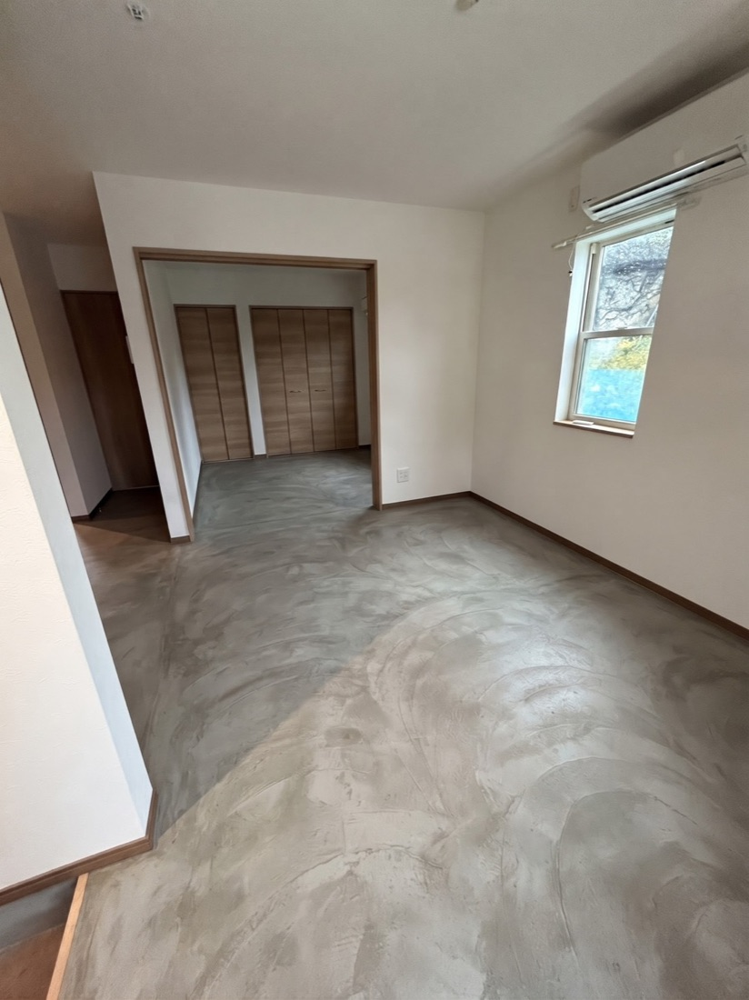
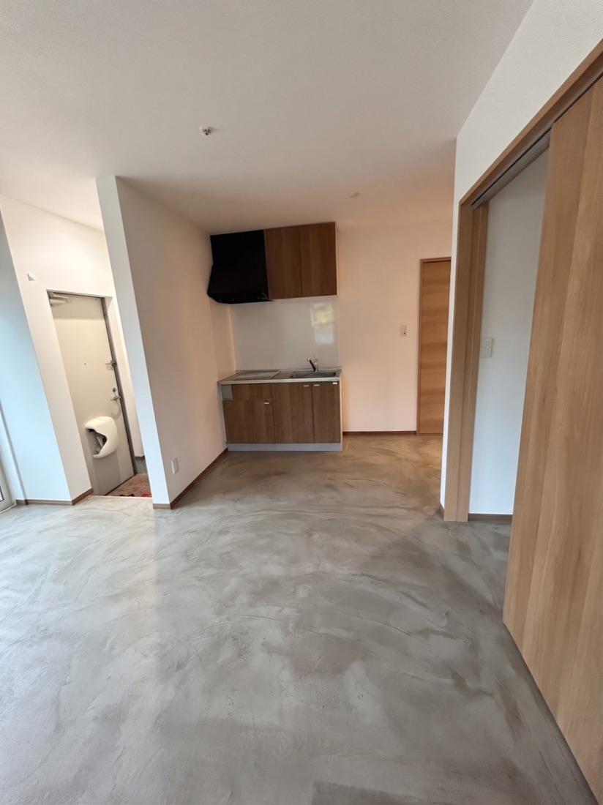
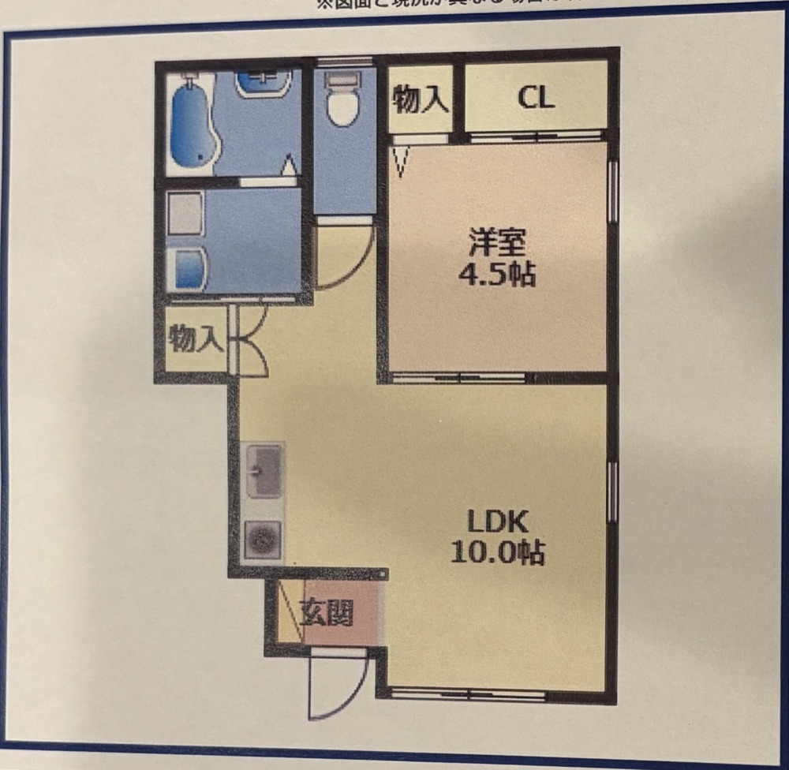
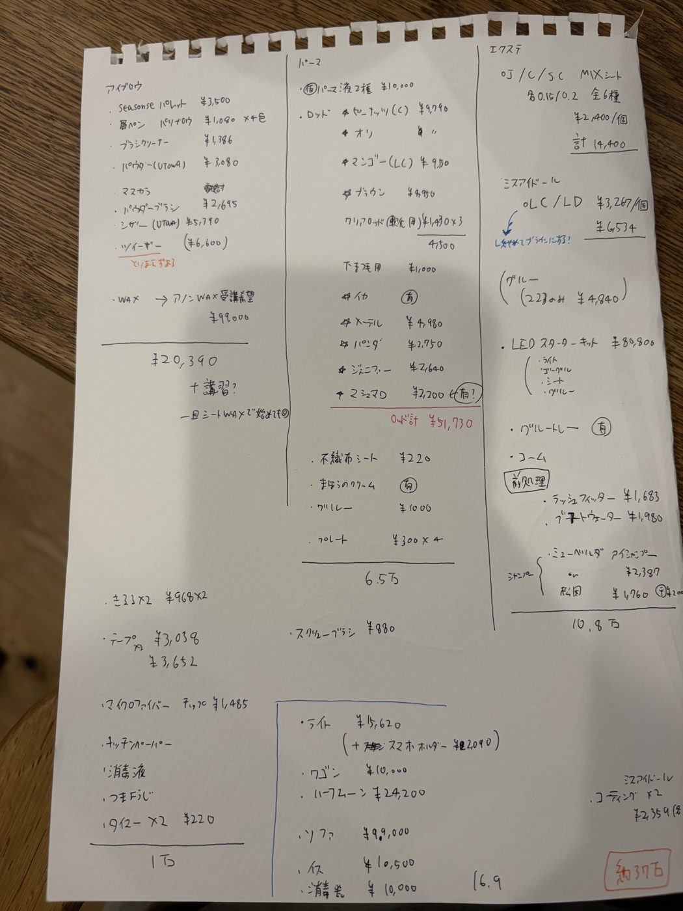

有田川町内の1LDKに決定。大家さんのサロン利用はOK。駐車場は2台の見込み。前金を払って契約開始を後ろにずらせるか交渉中。
持続化補助金は12/15締切には出さず、4月開業後の春回（4〜5月頃）または秋回（11〜12月頃）に申請 → 交付決定後に新メニュー機器等を買う。開業費を絞れば自己資金でも回るが、手元温存・補助金つなぎ用に公庫（100万円目安）を借りる選択肢も検討中 → 補助金・公庫のページ。
まつげエクステは美容所の開設届が必要。図面を持って保健所へ事前相談（施術する部屋の広さ・洗い場・消毒・換気）。
| 時期 | やること | 完了の目安 |
|---|---|---|
| 11月末 | 契約開始日・前金・部屋番号・駐車場を詰め、前金で部屋を押さえる。保健所へ図面で事前相談。メニュー・営業日・時間を決める。自己資金と公庫で借りるか（創業セミナー11/24締切）を決める | 部屋を押さえ、融資・創業支援の方針が決まる |
| 12月前半 | 契約（契約日・鍵渡し日を確定）。保健所の指摘から必要な工事を決める。商工会に補助金（春回/秋回の1年ルール）と継続支援を相談 | 物件が確定し、必要な工事が分かる |
| 12月中旬〜末 | 内装・設備・備品の見積もり。初期費用と運転資金の総額を確定。公庫を使うなら見積書・創業計画書を揃えて事前相談・正式申込（通帳残高が減る前に動く） | 必要資金と調達方法が決まり、申込完了 |
| 1月前半 | レイアウト・工事内容を確定し業者を3月頭で予約。備品を選んで発注（チェアは注文から約2週間→引き渡し後に届くよう2月前半に注文）。Wi-Fiを申し込む。公庫を使う場合は面談・審査 | 引き渡し後の作業が具体化する |
| 1月後半 | 店名・メニュー・料金を確定。LINE・Instagram・予約方法、カウンセリング票・同意書、会計方法を準備。公庫を使う場合は月末〜2月初めに契約・着金 | お客様を受け入れる仕組みと資金が整う |
| 2月前半 | 電気・水道・ネットを引き渡し日から使えるよう手配。店舗用の火災保険・賠償保険。工事・搬入日程を確定 | 引き渡し後の予定が組める |
| 2月中 | 引き渡し。室内の傷・設備を確認して撮影。採寸・最終確認 | 店づくりに着手できる |
| 3月前半 | 工事・設備設置・搬入。美容所の開設届を出し、検査日を決める | 店の形ができる |
| 3月後半 | 保健所の検査。動線確認・練習・モニター施術。開業告知と予約受付開始 | 検査に通り、予約を受けられる |
| 4月 | 開業。開業届（開業から1か月以内）・青色申告承認申請（2か月以内） | 営業開始 |



チェアとパーテーションの見た目は、それぞれのリンク先で見られます：T01 チェア／紙製パーテーション
電動垂直昇降リクライニングチェア T01 アドバンス（7beauty）。ベッドではなくチェアで施術する前提。
| 価格 | 96,800円（税込）。送料・組立設置は別 |
|---|---|
| 大きさ | 通常 幅84×奥行89cm／ほぼフラット時 長さ約180cm |
| 置き場所の目安 | フラット時の長さ180cm＋頭側の作業スペース約70cm、左右に各60cm前後 → 約2.5m×2.0m |
| 電源 | 電動（AC100V・180W）。チェアの近くにコンセントが要る |
| 重さ・納期 | 約66kg。注文から約2週間。大型品なので搬入経路（玄関ドア幅）の確認が必要 |
| 色 | オフホワイト／ブラウン／グレージュ／ブラック（幅が9cm細い「スリム」もあり） |
| 区分 | 主な中身 | 小計 |
|---|---|---|
| アイブロウ | パレット・眉ペン4色・パウダー・ブラシ・シザーなど（WAXは講習 99,000円を受けるか検討中。最初はシートWAXでも可） | 約2.0万円 |
| まつ毛パーマ | パーマ液2種・ロッド一式（51,730円）・シート・グルー・プレートなど | 約6.5万円 |
| エクステ | MIXシート6種・ミスアイドール・LEDスターターキット（80,800円）・前処理・シャンプーなど | 約10.8万円 |
| 小物 | テープ・マイクロファイバーチップ・消毒液・タイマーなど | 約1.0万円 |
| 設備 | チェア（ソファ）99,000円・ハーフムーン 24,200円・ライト 15,620円・ワゴン・イス・消耗品 | 約16.9万円 |
| 合計 | 約37万円 |
この中に入っていない物：パーテーション（約3.2万円）、床のタイル（約6.5万〜20万円）、掃除機（約3〜5万円）、洗濯機＋乾燥機（約14万円）、看板・チラシ・ホームページ、WAX講習。

できます。新しいメニューを始めて新しいお客様を増やすための機器は、「機械装置等費」として対象になります。ただし交付決定のあとに注文・支払いした物だけです。申請は開業後の回になるので、交付決定は早くても2027年の秋以降の見込みです（日程未発表）。開業時に必要な物は外れます。そこで、開業時は基本メニュー（まつげエクステ・アイブロウ）で始め、新メニューを交付決定のあとに追加する形にします。
| 交付決定のあとに買う物（案） | 金額 | 対象になるか |
|---|---|---|
| LEDエクステ（LEDスターターキット：ライト・ゴーグルなど） | 80,800円 | ○ 機器は対象。グルー・シートなどの消耗品は外れる可能性 |
| まつ毛パーマのロッド一式 | 51,730円 | △ 繰り返し使う器具なので対象の可能性。パーマ液は消耗品で外れる可能性 |
| 看板（店の外・窓） | 15万円（仮定） | ○ 広報費 |
| チラシ作成・配布 | 10万円（仮定） | ○ 広報費 |
| ホームページ・予約ページ | 12万円（仮定） | ○ ただし補助額の1/4まで。ホームページだけでの申請は不可 |
| 合計 | 約50万円 | 補助（2/3）＝約33.5万円 |
一般型なら満額の50万円に75万円の支払いが必要（あと約25万円分）。創業型なら上限200万円まで広げられる。WAXの講習費は対象外の可能性が高い（講習・研修は対象経費に無い）。交付決定の前に予約・前払いすると対象外。どこまで対象になるかは、商工会に確認する。
申請書に書くストーリー（案）：開業後、LEDエクステ（硬化が速く持ちが良い・においが少ない）とまつ毛パーマを新メニューとして加え、看板・チラシ・ホームページで地域の新しいお客様に知らせる。
| 買い先 | 候補と価格（税込） | 実物を見られる場所 |
|---|---|---|
| SEVEN BEAUTY 7beauty.jp／東京・台東区のメーカー兼通販 |
T01 アドバンス 96,800円（昇降 最大20cm・3モーター・メモリー機能）。スリム版あり。送料・組立設置は別 | 大阪にストアがあるという情報あり（要確認）。機器営業部 03-5812-4455（平日9:30〜18:30）で、大阪で座れるか確認する |
| ビューティガレージ プロ向け通販・会員価格 |
SHIFFON LUXE 96,800円（昇降18cm）／DITE 141,900円（昇降約15cm）／シエロplus 82,500円・SHIFFON 72,380円・SHIFFON Jr 71,280円・SISTA neo 65,780円（いずれも昇降なし） | 大阪ショールーム（大阪市西区新町・10〜18時・予約制・駐車場なし）。展示機種は要問い合わせ |
| タカラベルモント 国内大手メーカー |
アイラッシュチェア「Riche」など。価格は販売店の見積もり | 大阪・長堀橋のショールーム |
| 和歌山の美容ディーラー | ネットでは、和歌山でまつげ用チェアを扱う店は見つからなかった | いまの商材（グルー・まつげ）の仕入れ先に、チェアも取り寄せられるか聞く |
比べると：同じ96,800円ならT01の方が昇降幅が大きい（20cm と 18cm）。昇降があると施術者の腰の負担が減る。昇降なしでよければ約7万円から。買う前に大阪で一度座って、高さとリモコンの使いやすさを確かめるのがおすすめ。
| サービス | 月額（税込） | キャンペーン（2026年11月時点） | 2年の実質月額 | ポイント |
|---|---|---|---|---|
| ドコモ home 5G | 5,280円・端末実質0円・解約金0円 | dポイント15,000pt（乗り換えなら追加あり） | 約4,400〜4,700円 | 速さの評価が高い。登録した住所でしか使えない |
| ソフトバンクエアー | 4,950円（25か月目〜5,368円）※12/1から各330円値上げ | 最大45,000円（年齢・機種など条件あり） | 約3,400円 | 登録した住所でしか使えない |
| モバレコAir（ソフトバンク回線） | 初月1,320円→3,080円→4,180円（13か月目〜） | 最大39,500円（12か月目ごろ受け取り） | 約1,900円 | 回線はソフトバンクエアーと同じで安い。受け取り手続きを忘れないこと |
| とくとくBB ホームWi-Fi（WiMAX） | 390円（〜5か月）→4,763円・端末代924円×36回 | 30,000円（優待コード入力） | 約3,500円 | 36か月より前に解約すると端末代の残りを払う |
| Rakuten Turbo | ― | 楽天モバイル利用者は毎月ポイント | 約5,000円 | 楽天モバイルを使っている場合だけ候補 |
おすすめ：ドコモ home 5G（安定重視）か モバレコAir（安さ重視）。家族のスマホと同じ会社にするとセット割が付くことがある。申込は店の住所で、引き渡しが決まってから（2月）。キャンペーンは月ごとに変わるので、申し込む時にもう一度比べる。店の場所が5Gエリアかは各社のエリアマップで確認。
敷く広さ：LDK 10帖＋洋室 4.5帖 ＝ 約23.5㎡（1帖＝1.62㎡で計算）。切り落としのロス10%を足して約26㎡分を買う。接着剤を使わない「置き敷き」なら、退去時に剥がして戻せる。
| やり方 | 1㎡あたり | 全体（約26㎡） | メモ |
|---|---|---|---|
| 通販の「置くだけ」吸着タイル（自分で敷く） | 約2,500〜4,500円（仮定） | 約6.5万〜12万円 | 一番安い。厚み・重さがある物ほどズレにくい |
| メーカーの置き敷き材（例：シンコール「置敷」）を自分で敷く | 約6,160円（税別5,600円） | 約16万円 | 業務用の品質。東リ「ピタフィー」にもモルタル柄あり（価格は要確認） |
| 業者に頼む（材料＋施工） | 約5,000円〜（張り替えの平均） | 約12万〜20万円 | 置き敷き材の値段で上下する。見積もりは2〜3社 |
いまの床もグレーのモルタル調なので、その上に置き敷きして問題ないか（段差・ドアの開閉・凹凸）を内見時に確認。チェア（約66kg）の下はタイルの上でも傷防止マットを敷く。大家さんにも一言伝えておくと安心。
| 候補 | 向き・不向き |
|---|---|
| マキタ CL286FD | ◎ 軽い・丈夫・安い。31.5㎡ならこれで十分 |
| シャーク・ダイソン | ○ 吸う力は強いが、重め・高め（31.5㎡には大きすぎる） |
| ロボット掃除機 | △ チェアやパーテーションが多く、狭い店では効果が小さい |
| 候補 | 向き・不向き |
|---|---|
| 縦型＋衣類乾燥機 | ◎ 仕上がり・速さ・故障時に片方だけ替えられる |
| 縦型洗濯乾燥機（1台） | ○ 置き場所が狭いならこちら。乾燥は時間がかかる |
| ドラム式 | △ 20万円以上。この量には大きすぎる |
買う前に、洗濯機置き場（防水パン）の幅・奥行き、乾燥機を上に置く高さ、コンセントの数を測る。
※ 7月までのガントチャート・行動計画書（Google）は2027年夏開業の前提のままで、まだ4月開業に直していません。